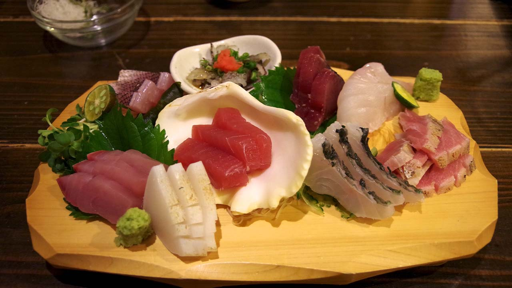

Crafting Culinary Delight: A Guide to Homemade Sashimi

Introduction:
Sashimi, a jewel in the crown of Japanese cuisine, is a delicate and
artfully presented dish that celebrates the pure essence of fresh,
high-quality fish. While the thought of making sashimi at home may
seem daunting, it's an incredibly rewarding endeavor that allows you
to experience the true flavors of pristine seafood. Join us on a
culinary journey as we delve into the art of creating homemade
sashimi, where precision meets passion in every slice.
Ingredients:
Sashimi-Grade Fish:
-
Start with the foundation of your dish – the fish. Seek out
sushi or sashimi-grade fish from a reputable fishmonger or
specialty seafood market. Common choices include tuna, salmon,
yellowtail, and halibut.
Nori (Seaweed Sheets):
- Full-sized nori sheets
Wasabi and Soy Sauce:
-
Elevate your sashimi experience with authentic wasabi and
high-quality soy sauce. Freshly grated wasabi provides a
nuanced, aromatic kick that enhances the natural flavors of
the fish.
Pickled Ginger (Gari):
-
Serve alongside your sashimi to cleanse the palate between
bites. Gari adds a touch of sweetness and acidity.
The Art of Slicing:
Sharp Knives:
-
Invest in a set of razor-sharp knives, including a long
slicing knife for clean, precise cuts. Dull knives can damage
the delicate texture of the fish.
Technique:
-
Master the art of slicing. The key is to cut against the grain
in thin, even slices. Each slice should showcase the vibrant
color and texture of the fish.
Aesthetic Arrangement:
-
Arrange your sashimi slices on a clean, chilled plate in an
aesthetically pleasing manner. Embrace negative space to
highlight the beauty of each piece.
Practice Food Safety:
-
Always practice safe food handling and storage to prevent any
risk of foodborne illnesses. Keep fish refrigerated until
ready to use.